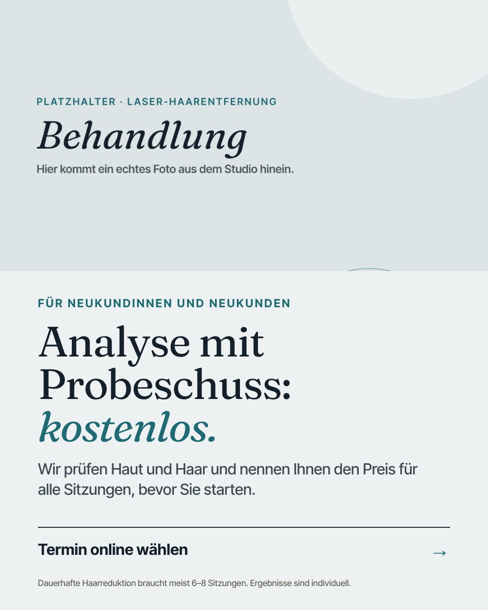
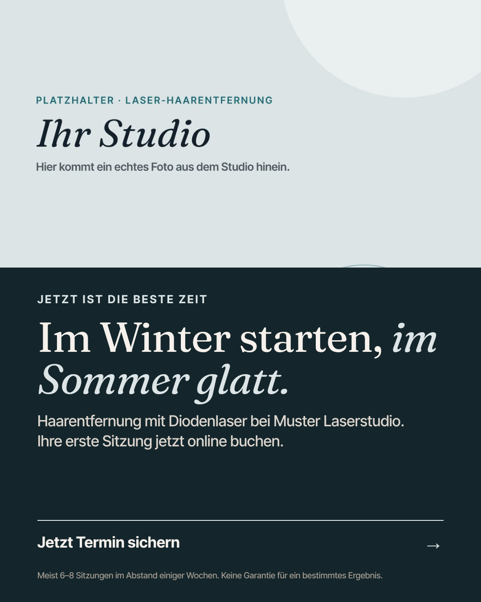
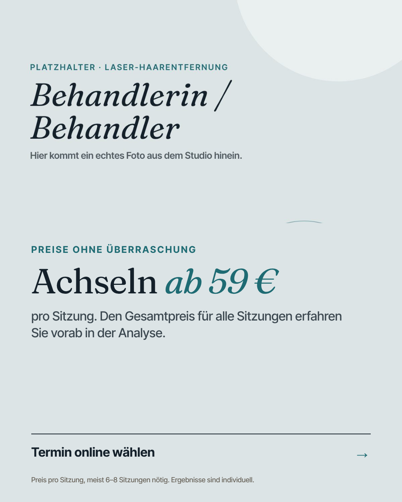
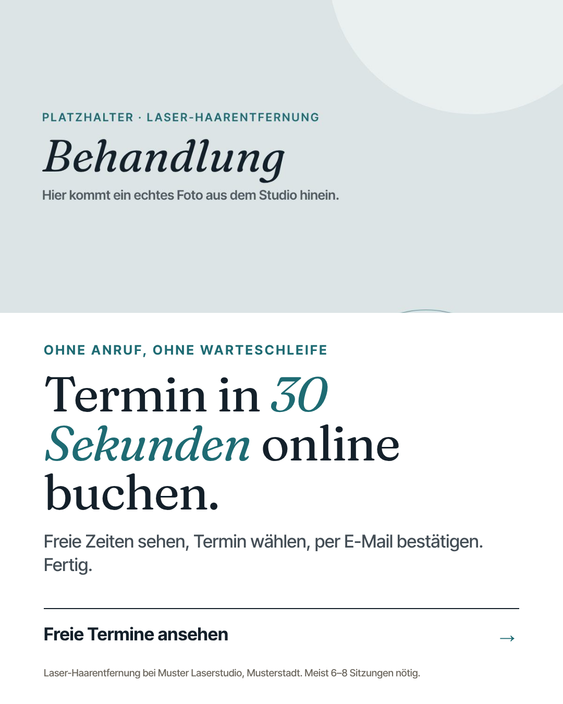
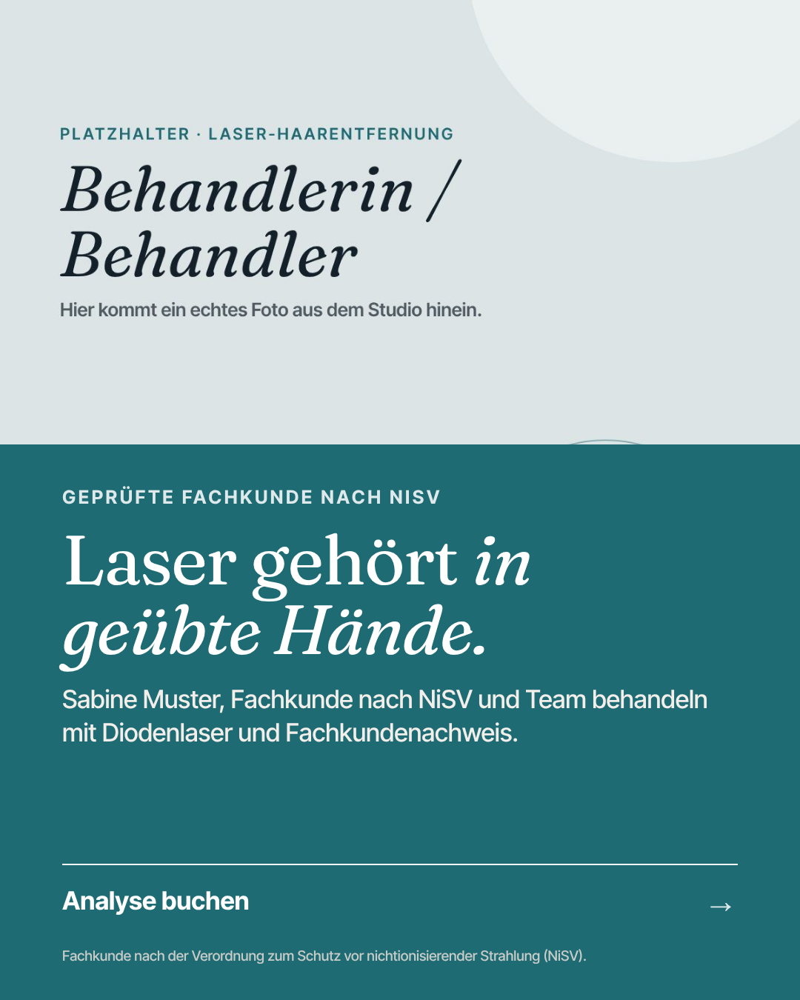

So sehen die Anzeigen aus
Muster Laserstudio · Laser-Haarentfernung
Fünf Anzeigen für Facebook und Instagram, dazu die Google-Suchanzeige.
Die Fotos sind Platzhalter. Beim echten Start kommen Fotos aus dem Studio hinein: Behandlung, Räume, Behandlerin oder Behandler. „Dauerhaft“ steht nie ohne den Hinweis auf mehrere Sitzungen.
Facebook und Instagram
Muster LaserstudioGesponsert · 🌐
Haarentfernung mit Laser, ohne Rätselraten: In der kostenlosen Analyse prüfen wir Haut und Haar, Sie spüren beim Probeschuss, wie es sich anfühlt, und Sie bekommen den Preis für alle Sitzungen vorab.
👉 Termin direkt online wählen.

muster-laserstudio.netlify.appAnalyse mit Probeschuss: kostenlosTermin in 30 Sekunden online wählen.
Jetzt buchenMuster LaserstudioGesponsert · 🌐
Laser-Haarentfernung braucht ein paar Monate. Wer im Herbst oder Winter startet, ist bis zum Sommer meist durch. Starten Sie mit einer kostenlosen Analyse inklusive Probeschuss bei Muster Laserstudio.
👉 Termin online wählen.

muster-laserstudio.netlify.appIm Winter starten, im Sommer glattLaser-Haarentfernung in Musterstadt.
Jetzt buchenMuster LaserstudioGesponsert · 🌐
Was kostet Laser-Haarentfernung? Bei Muster Laserstudio zum Beispiel Achseln ab 59 € pro Sitzung. Wie viele Sitzungen Sie brauchen und was das zusammen kostet, sagen wir Ihnen in der kostenlosen Analyse, bevor Sie sich entscheiden.
👉 Termin online wählen.

muster-laserstudio.netlify.appAchseln ab 59 € pro SitzungGesamtpreis vorab in der Analyse.
Jetzt buchenMuster LaserstudioGesponsert · 🌐
Keine Lust auf Telefon? Bei Muster Laserstudio sehen Sie alle freien Termine online und buchen Ihre kostenlose Analyse mit Probeschuss in 30 Sekunden.
👉 Freie Termine ansehen.

muster-laserstudio.netlify.appFreie Termine online ansehenLaser-Haarentfernung in Musterstadt.
Jetzt buchenMuster LaserstudioGesponsert · 🌐
Laser-Haarentfernung ist Vertrauenssache. Bei Muster Laserstudio behandeln ausschließlich Fachkräfte mit Fachkundenachweis nach NiSV. Starten Sie mit einer kostenlosen Haut- und Haaranalyse.
👉 Termin online wählen.

muster-laserstudio.netlify.appLaser mit geprüfter FachkundeAnalyse mit Probeschuss: kostenlos.
Jetzt buchenGoogle · Suchanzeige
Gesponsert
Muster Laserstudiomuster-laserstudio.netlify.app
[google_titel]
[google_text]